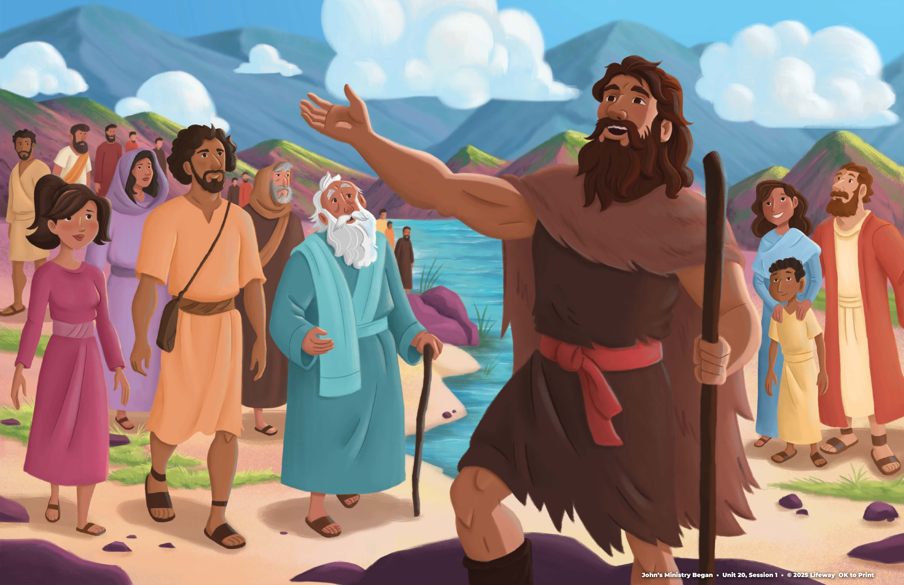
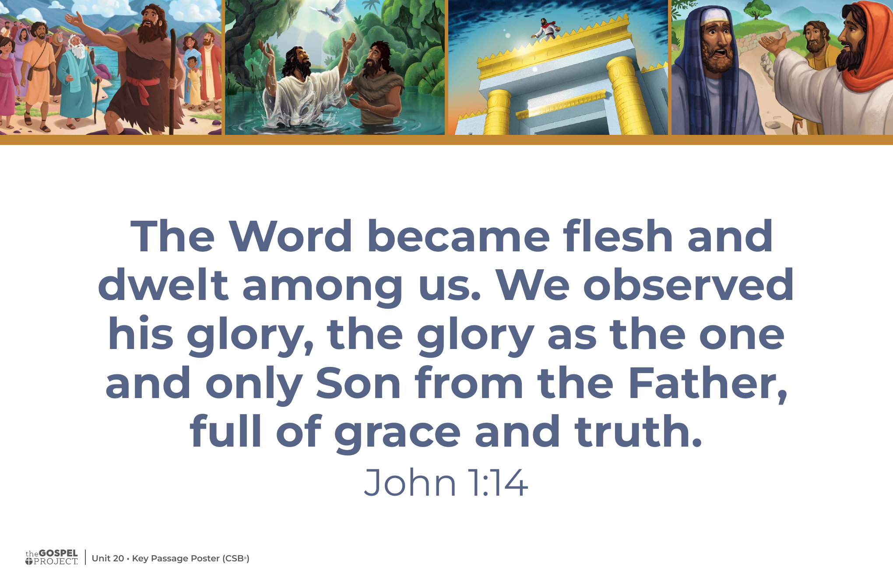
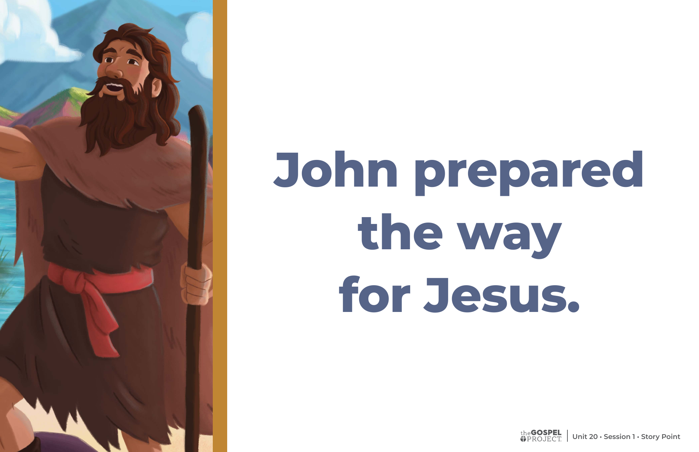

1
What message did John preach?
Repent, because the kingdom of heaven has come near.
Before Jesus began His ministry, God sent John with an important message.

The Gospel Project: Kids · John's Ministry Began
John lived in the wilderness and preached near the Jordan River. People came from all over Judea to listen.
Source references: Matthew 3; Mark 1; Luke 3; John 1
John looked and lived differently from most people. But his unusual clothes and food were not the main point.
The food and clothing details are from the Bible story in the leader guides.
John called people to turn away from sin and turn toward God.
Teaching summary adapted from the Younger Kids and Older Kids guides.

Prepare the wayIsaiah 40:3 is cited in the leader guides as a promise about John's role.
John said he was not worthy even to untie Jesus' sandal straps. Jesus is the powerful Savior John announced.
John 1:26–27; Matthew 3:11 · Paraphrased for teaching.
John prepared the way for Jesus by calling people to repent of their sins.

John prepared the wayChrist connection from the Younger Kids and Older Kids leader guides.
Jesus is fully God and fully human.
Unit 20 visual resources · CSB key-passage wording shown.
Tap a question to reveal a short answer cue.
Questions adapted from the lesson review, gospel discussion, and group discussion prompts.